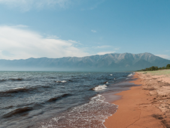
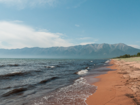
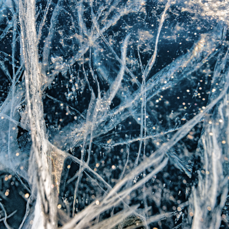

Travel in Russia
The real country is not in the news, but here.
your shelf — upper
What haven't we seen there?
According to a survey by VTSIOM, 95% of Russians dream of going somewhere, but only 36% plan to spend their vacation within the country. They think, what haven’t we seen at home? In fact, Russia is a whole universe, with the gentle seas of the south, the dense forests of the Sayan Mountains, and the harsh ice of the Putorana Plateau. And all this beauty can be seen without millions in your bank account, a foreign passport, and long flights. Just like Vera Bashmakova — a brave young mother who took her three children, put them in her "Lada," and drove 20,000 kilometers across her native country. We’ve selected and described some interesting places that deserve your vacation.
- Time zones 11
- UNESCO World Heritage Sites (natural) 12
- UNESCO World Heritage Sites (cultural) 16
- Nature reserves 105
- Airports 241


 



Curonian Spit
URL
park-kosa.ru
Here, in the midst of forests and sand dunes, you can see two water horizons — the calm Curonian Lagoon on one side and the rippling waves of the Baltic Sea on the other. A unique natural area at the edge of the Russian enclave.
But Kaliningrad Oblast doesn’t stop there. For travelers and explorers, nearby lies the westernmost point of Russia, the Baltic Spit — and the German heritage of small seaside towns. The atmosphere of these places excludes hustle and bustle, immersing you in the tranquility of nature and the scent of the cool, steel-colored sea.
Kola Peninsula
Almost the entire peninsula is located beyond the Arctic Circle. The Sami tundra, with taiga to the south and the Arctic Ocean, which pretends to be the Barents Sea, to the north.
Perhaps you’ve seen Zvyagintsev's films and even heard about the Arctic festival in Teriberka. Perhaps the word "Khibiny" hasn't remained buried under the snow of school geography lessons. Perhaps you haven’t been interested in the super-deep well that pierces the Earth's crust, and apatite no longer fills you with excitement. But your dream of seeing the northern lights begins with a ticket to Murmansk.
Altai
URL
YouTube
Altai is one of the most beautiful places in Russia. Primarily because of the mountains: if you travel along the ridge, you’ll see slopes covered with pines, mountain rivers, and lakes. And if you open the windows of your car, you’ll encounter the invisible wonder of this region — mountain air.
The climate in Altai is moderate, so the best time to visit is summer. This way, you’ll see the full variety of local flora and fauna. In the Altai forests, moose roam, eagles fly above the ridges, and roe deer graze on the plains. And the famous manuls — they’re also inhabitants of the Altai region.
Winter Baikal

Baikal is well known as the largest lake in the world. Many also know that it is the largest source of fresh water and one of the most beautiful places in Russia.
Of course, this is all true. But Baikal is also the perfect place for skijoring competitions. This is a sport where a skier attaches themselves to a motorcycle, and the tandem tries to reach the highest possible speed on the ice. In March 2019, a world record was set at the "Baikal Mile" festival — 197.011 km/h.
Karelia

Siberia doesn't end at the Urals, but in Karelia: the Siberian larch that forms the taiga doesn’t grow west of Vodlozero. But here, it reaches 30 meters tall — the forests of Karelia's national parks, due to impenetrable swamps, have never seen an axe. Some pine trees are over five hundred years old. Touch a living being that saw the sun before Ivan the Terrible did. In the virgin forest, there isn’t a trail for a hundred kilometers. And on the rare paths, trees just a couple of meters from the ground are marked with bear claws. To let everyone know who the real boss is here.
To Baikal by "Dogsled"
Inspired by a study topic about the Trans-Siberian Railway — a journey from the capital to Baikal by commuter trains.